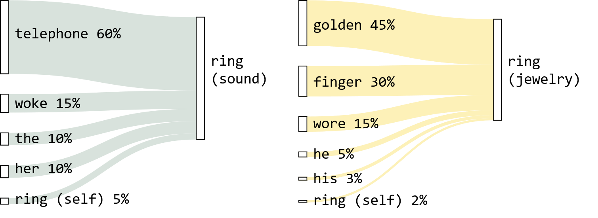

---
config:
look: handDrawn
layout:
themeVariables:
fontFamily: "Palatino Linotype, Book Antiqua, Garamond, Kristen ITC"
---
flowchart LR
X("Ambiguous<br>Token")
C("Context<br>(fellow tokens)")
M("Meaning")
X --> M
C --> M
style X fill:#e8dcc4,stroke:#000
style C fill:#d8e2dc,stroke:#000
style M fill:#fff,stroke:#000, stroke-width:2px
2 The Fellowship of Tokens
2.1 Meaning Arises from Context
In Chapter 1, we learned to convert text into numbers—the input matrix X—so machines can process it. But remember the key problem? A word’s meaning shifts with context, yet we assign it the same embedding vector regardless of context.
For example, the word “ring” is represented by the same embedding vector whether it means a sound or a piece of jewelry.
Therefore, the central problem for this chapter becomes: How can we make a token’s meaning change based on its context? To achieve this, we need to incorporate context. But what is context, exactly?
We can view context as the collective meaning of all tokens within a text. Under this view, the meaning of a token therefore relies on the meanings of its fellow tokens.
2.2 Mixing Tokens by Relevance
So if a token’s context is just “other tokens,” can we simply average the other tokens? The answer is… no. Some words are more relevant to a particular word than others within the context.
We need to weigh some words more heavily than others. A token’s meaning should be something like: 20% my base meaning, 10% from this word, 70% from that word. But what determines these percentages?
2.2.1 Why Relevance as the Weight?
Relevance measures how strongly two tokens relate to each other within a given context. For example, in The ring of the telephone woke her up, word pairs have different levels of relevance:
ringandtelephone: tightly connected (form a unitring of the telephone)ringandthe: weakly connected (theis just a grammatical marker)
Why use relevance as the weight? Because strongly related tokens help shape each other’s contextual meaning. - If ring and telephone are tightly connected, then telephone carries important information about what ring means here (a sound, not a piece of jewelry). Weakly related tokens carry little such information.
With relevance-based weighting:
Token Relevance to ringtelephone60% woke15% the10% her10% ring(itself)5% Now tokens contribute according to how strongly they relate to
ring, and therefore how much they tell us aboutring’s meaning in this context.A token’s meaning is a mixture of tokens from a given context, weighted by relevance.

2.2.2 The “Relevance Table”
Since every token’s meaning depends on every other token, we need relevance weights for all possible token pairs. For a sequence of \(N\) tokens, this forms an \(N \times N\) table where each row sums to 1:
Example: ['the', 'ring', 'fell']
the |
ring |
fell |
|
|---|---|---|---|
the |
0.50 | 0.30 | 0.20 |
ring |
0.15 | 0.25 | 0.60 |
fell |
0.20 | 0.50 | 0.30 |
Read the “ring” row: ring and fell have the strongest relationship here (0.60), so fell contributes most to ring’s contextual meaning.
Note
Relevance doesn’t have to be mutual. ring can lean heavily on fell without fell leaning much on ring.
This table is precisely what the attention mechanism creates and what it uses to compute the contextual meaning of a token.
2.3 Attention Mechanism: The Intuition
2.3.1 What is “attention”?
Before we talk about how the “attention mechanism” creates the “relevance table”, you might ask, what does “attention” mean here?
Well, do not try to make sense of this word. We will come to that later.
The “attention mechanism” consists of two main stages:
- Compute the relevance between tokens.
- Retrieve and aggregate information by relevance.
---
config:
look: handDrawn
layout: elk
themeVariables:
fontFamily: "Palatino Linotype, Book Antiqua, Garamond, Kristen ITC"
---
%%{ init: { 'flowchart': { 'defaultRenderer': 'elk' } } }%%
flowchart LR
X("Input Tokens")
subgraph Attention["Attention Mechanism"]
direction LR
A["**Stage 1**:<br>Compute Relevance"]
B["**Stage 2**:<br>Retrieve Information by Relevance"]
A --> B
end
Z("Contextualized<br>Tokens")
X --> Attention --> Z
style X fill:#d8e2dc,stroke:#000
style A fill:#e8dcc4,stroke:#000
style B fill:#fdf1b8,stroke:#000
style Z fill:#d8e2dc,stroke:#000
style Attention fill:#fff,stroke:#000
And that’s all you need to know for now.
2.3.2 More Specific Definition of Relevance
In the previous section, we defined relevance as “how strongly two tokens relate to each other within a given context”. To measure it, we need to be more specific.
Consider two tokens, token \(i\) and token \(j\). We say token \(j\) is relevant to token \(i\) if token \(j\) influences the meaning of token \(i\), i.e. some sort of relevant information is passed from token \(j\) to token \(i\).
And what is relevant information? - If something is relevant to me, it means that thing provides what I require in a given situation. - Likewise, the information that token \(j\) provides is relevant if that’s what token \(i\) requires in a given context. For example, an action token requires a token that acts as the subject in the context.
(Let’s ignore what a token could possibly “require” for now.)
In other words, relevance is how well token \(i\)’s requirements align with what token \(j\) provides in a given context.
In transformer terminology, what a token requires is the “Query” vector (\(q\)) and what it can provide to others is the “Key” vector (\(k\)).
| Technical Variable | Metaphor | Intuition |
|---|---|---|
| Query vector (\(q\)) | Requirements | What information does this token require in this context? |
| Key vector (\(k\)) | offerings | What information can this token provide to others in this context? |
NoteWhat does a token “require”, anyway?
Why does a token ever “requires” anything? Well, because we tell it to. To be precise, during transformer training, our objective is to predict missing tokens that fit in well in a given text. (We’ll cover training later.) That means tokens have to sound natural, like what humans would say in real life (i.e. training data).
This requires a token’s meaning to align well with the meanings of other tokens in a given text, e.g. an action token “requires” a subject token in the same context. Computer scientists model this alignment using two numerical patterns (model weights), which represent every token’s relationship patterns in two directions.
We derive the Query and Key vectors from these relationship patterns stored in the form of model weights (see next section). In practice, Query and Key are just some numerical patterns, not human-readable categories like “subject” or “action”. These patterns can be interpreted as “requirements” and “offerings” or anything that help us understand what Query and Key do.
2.3.3 Stage 1: Compute Relevance
We learn every token’s “requirements” and “offerings” (Query and Key vectors) through transformer training (see later sections). For a trained model, we already know what these values are.
When we feed the tokens (in the form of \(X\)) into a trained model, it will derive the Query and Key vectors from our input (see Step 2 in the next section). It will then check for relevance between them.
Since relevance involves both “requirements” and “offerings”, the simplest way is to multiply them together. We will need to do that for every dimension of Query and Key vectors (think of it as an aspect of “requirements” and the corresponding aspect of “offerings”), and then sum the numbers up. The most efficient way is to compute their dot product.
For tokens \(i\) and \(j\):
\[ \text{relevance}(i, j) = q_i \cdot k_j \]
We repeat this for every token-token combination to get the “relevance scores”. We can do this efficiently by matrix multiplication:
\[ \text{Relevance scores, }S = Q \cdot K^T \]
where \(Q\) and \(K\) are the matrices where each row is the \(q\) and \(k\) vectors of all tokens respectively. \(K^T\) is the transpose of \(K\).
We then convert the “relevance scores” to the attention matrix (A) so that the relevance scores become percentages. Let’s just treat it as a normalization for now:
\[ \text{Attention matrix, } A = \text{Normalize}(\text{Relevance scores}) \]
2.3.4 Stage 2: Retrieve Information by Relevance
We’ve figured out who should influence whom (via relevance). But we also need to know what information actually gets passed.
Once we have the attention matrix \(A\), we use it to get the contextualized value \(z\) of token \(i\), which is the sum of the values of all tokens (including \(i\) itself) weighted by \(A\):
\[ z_i = \sum_{j=1}^{N} A_{ij} \cdot v_j \]
where \(v\) is the Value vector, i.e. information carried by a token.
2.3.5 What Changed after Attention?
| Dim 1 | Dim 2 | Dim 3 | Dim 4 | |
|---|---|---|---|---|
| Original \(v_{\text{ring}}\) | 0 | 0 | 2 | 2 |
| Contextualized \(z_{\text{ring}}\) | 1.72 | 0.19 | 0.62 | 2.15 |
\(v_{\text{ring}}\)’s dimensions 1 and 4 (where “fell” was strong) increased dramatically—\(v_{\text{ring}}\) now carries information from “fell.”
2.4 Why Is It Called “Attention”?
The name comes from an anthropomorphic analogy: each token “pays attention” to other tokens.
- High attention weight → “I’m focusing on you”
- Low attention weight → “I’m ignoring you”
2.4.1 Why the Metaphor Misleads
| Misconception | Reality |
|---|---|
| “The model decides what to focus on” | There’s no decision-making agent. It’s matrix multiplication. |
| “Attention weights explain reasoning” | Attention shows information flow, not necessarily “why” the model made a prediction. |
| “High attention = importance” | A token can be important with low attention, or unimportant with high attention. |
| “Attention is like human attention” | Human attention involves consciousness and intention. Self-attention is weighted averaging. |
The term “attention” is ubiquitous—use it when communicating with others. But when reasoning about what the model actually does, remember:
Attention is a relevance-weighted sum. Nothing more, nothing less.
2.5 Summary
2.5.1 Key Shapes
| Symbol | Meaning | Shape |
|---|---|---|
| \(X\) | Input token embeddings | \(N \times d_{model}\) |
| \(A\) | Attention matrix | \(N \times N\) |
| \(q_i\) | Query vector of token \(i\) | \(1 \times d_{model}\) |
| \(k_i\) | Key vector of token \(i\) | \(1 \times d_{model}\) |
| \(v_i\) | Value vector of token \(i\) | \(1 \times d_{model}\) |
| \(z_i\) | Contextualized representation of token \(i\) | \(1 \times d_{model}\) |
2.5.2 What Comes Next
Congratulations! You now understand the essence of Attention, the hardest climb in the transformer landscape. Here’s what remains to explore:
- Deriving Q, K, V from weight matrices: Where do Query, Key, and Value vectors actually come from?
- Normalizing relevance scores: How and why we convert raw scores into percentages
- Multi-head attention: Running multiple attention mechanisms in parallel, each focusing on different types of relationships
- Residual connections: Adding the input back to the output
- Layer normalization: Stabilizing the values flowing through the network
- Feed-forward layers: Additional processing after attention
- Stacking layers: Repeating the whole block multiple times
The next chapter will be a complete walkthrough—no detail left in shadow.